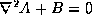

Jacobi relaxation is an iterative algorithm which, given a set of boundary conditions, finds discretized solutions to differential equations of the form . Each step of the algorithm replaces each node of a grid with the average of the values of its nearest neighbors. We have implemented an integer version of Jacobi relaxation. A computation element representing each grid point simply produces an average of its four inputs. We use the RawCS generator to generate connections between each computation element and its four neighbors. The resulting circuit has a simple regular grid structure, reflective of the data dependence graph of the algorithm. Here is a postscript excerpt furthering describing Jacobi from problem set 1 of the 6.846 class at MIT in 1992.
This benchmark is composed of the following sources:
The build directory contains a Makefile that simply includes the source Makefile.in. All building is done via make invokations from this directory. To get a feel for the possible make targets, check out the standard makefile that is included by Makefile.in, raw.make.
Included in the benchmark distribution are some baseline generated netlists in generic verilog, and those same cases synthesized to the VMW reference library :
The parameters are X dimension, Y dimension, data width, maximum iterations, and scan or bus I/O. Execute "gmake check" to simulate these netlists in the default verilog simulator (currently Cadence). Back to general documentation.